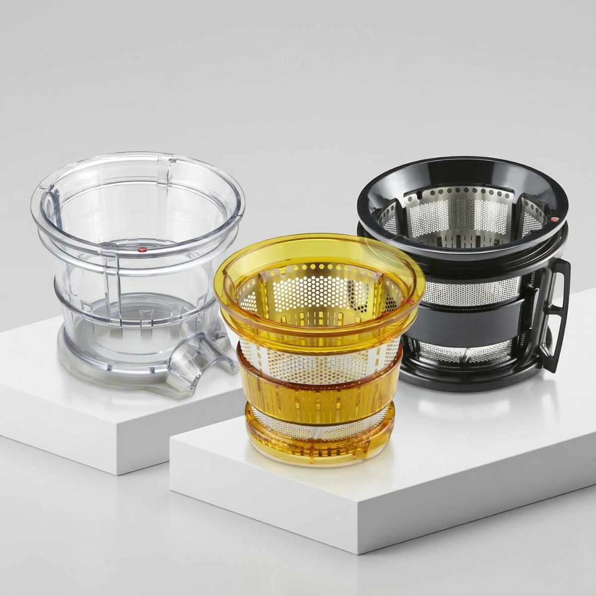

Juego de coladores
El sistema puede complementarse con coladores especializados para helados, smoothies y jugos con más pulpa.
Estos accesorios se adquieren por separado y amplían las posibilidades de preparación según la consistencia deseada.